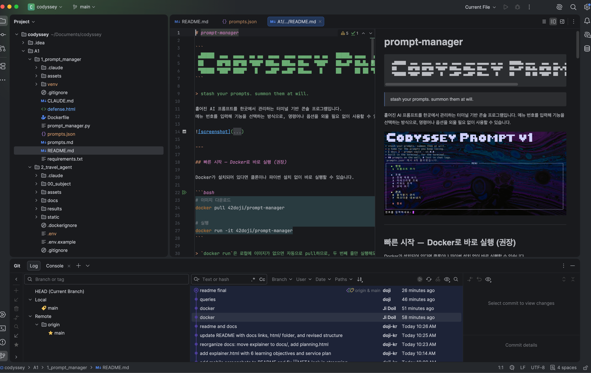
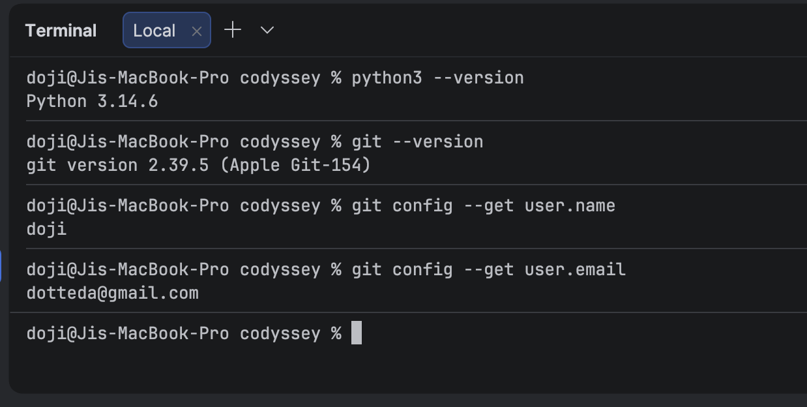
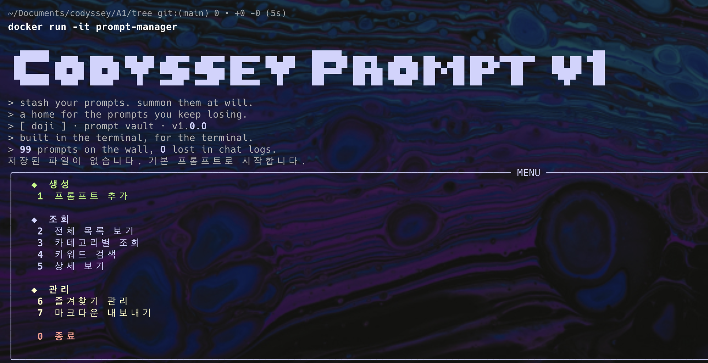
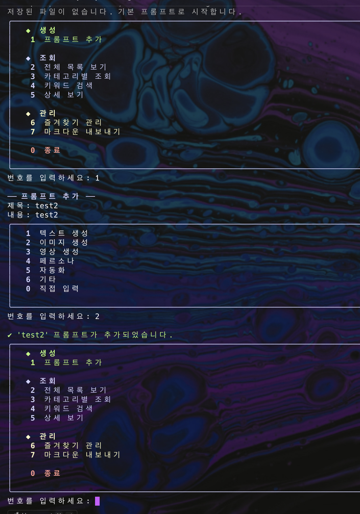
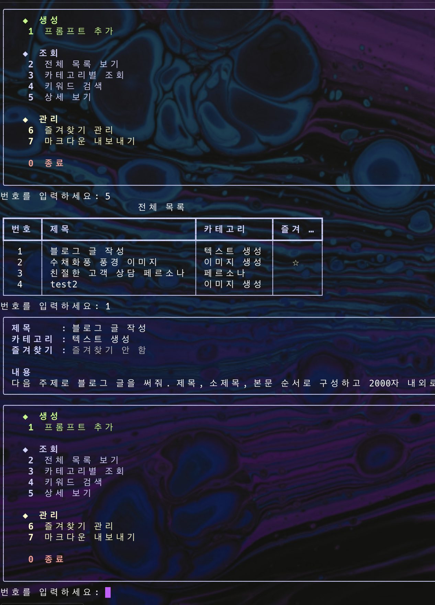
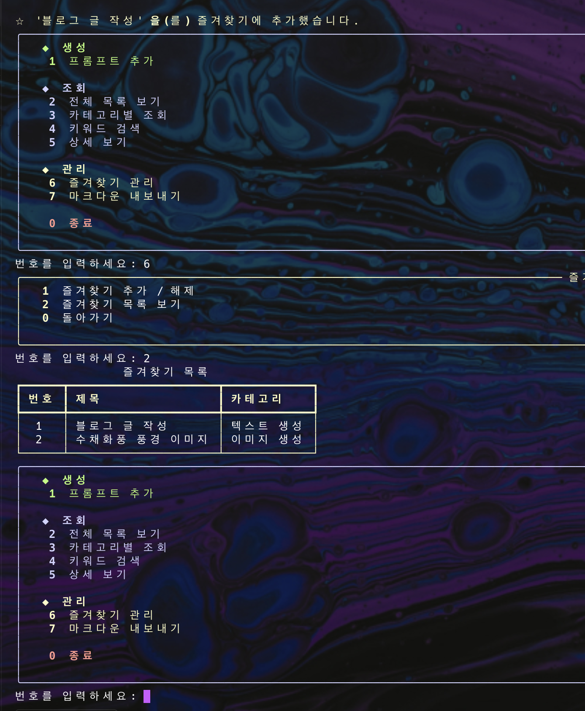
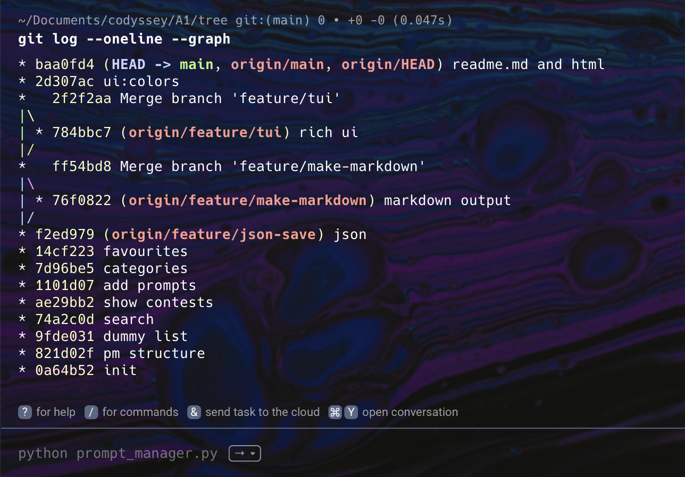

흩어진 AI 프롬프트를 한곳에서 관리하는 터미널 콘솔 프로그램, prompt-manager를 만들며 충족한 필수 요구사항과 보너스 과제, 그리고 설계 의도를 정리합니다.
메뉴·기본 데이터·6개 핵심 기능·코드 구조까지 필수 요구사항 전 항목 충족 · 함수 13개로 역할 분리 · rich 라이브러리 기반 TUI 적용
# 프롬프트 여러 개를 담는 리스트 prompts = [ { "title": "블로그 글 작성", "content": "다음 주제로 블로그 글을 써줘...", "category": "텍스트 생성", "favorite": False, }, # ... 추가 항목들 ]
while True: title = input("제목: ").strip() if title != "": break # 올바른 입력 → 루프 탈출 console.print("제목을 입력해 주세요.", style="yellow")
title_match = keyword.lower() in prompt["title"].lower() content_match = keyword.lower() in prompt["content"].lower() category_match = keyword.lower() in prompt["category"].lower() if title_match or content_match or category_match: # 결과에 포함
prompt["favorite"] = not prompt["favorite"] # True → False, False → True 한 줄로 추가/해제 모두 처리
def load_from_file(): global prompts try: with open(FILE_NAME, "r", encoding="utf-8") as f: prompts = json.load(f) # 파일 있으면 불러오기 except FileNotFoundError: pass # 없으면 기본 데이터로 시작 def save_to_file(): with open(FILE_NAME, "w", encoding="utf-8") as f: json.dump(prompts, f, ensure_ascii=False, indent=2)
| 항목 | 기존 CLI 도구(pmc) | 이 프로그램 |
|---|---|---|
| 검색 방식 | 옵션 플래그를 외워야 함. 제목·내용 따로 검색. |
메뉴에서 선택 → 검색어 입력만. 제목·내용·카테고리 한 번에 탐색. |
| 상세 보기 선택 | 긴 제목을 정확히 타이핑해야 선택 가능. | 화면에 보이는 번호를 그대로 입력. |
| 조작 방식 | 명령어·옵션 조합을 암기해야 함. | 모든 기능은 메뉴 번호로만 접근. 프로그램이 필요한 값을 하나씩 되물음. |
| 카테고리 검색 | 카테고리 필드 검색 불가. | "텍스트"만 검색해도 카테고리 "텍스트 생성" 항목이 나옴. |

VSCode — 프로젝트 구조 · README 프리뷰 · Git 로그 패널

터미널 — python3 --version · git --version · git config user.name/email

1) 실행 · 로고 & 메뉴 출력 (docker run -it prompt-manager)

2) 1번 프롬프트 추가 — 제목·내용 입력 → 카테고리 선택 → 추가 완료

3) 5번 상세 보기 — 목록 표시 → 번호 선택 → 제목·카테고리·즐겨찾기·내용 상세

4) 6번 즐겨찾기 관리 — 즐겨찾기 추가 → 서브메뉴 → 즐겨찾기 목록만 필터링

git log --oneline --graph — 브랜치 병합(Merge branch 'feature/tui', 'feature/make-markdown') 이력 확인
$ python3 prompt_manager.py # 메뉴 출력·기능 동작 확인
$ python3 --version # Python 3.14.6 $ git --version # git version 2.39.5 $ git config --get user.name # doji $ git config --get user.email # dotteda@gmail.com $ pip install -r requirements.txt
$ git add . $ git status $ git commit -m "커밋 메시지" $ git log --oneline --graph # 변경 이력을 그래프로 확인
# 저장소 초기화 및 원격 연결 $ git init $ git remote add origin <url> # 스테이징 및 커밋 $ git add . $ git commit -m "커밋 메시지" # 원격과 동기화 $ git push $ git pull # 브랜치 이동 및 병합 $ git checkout -b feature/tui $ git checkout main $ git merge --no-ff feature/tui # 참고용 오픈소스 클론 (구조 파악 후 삭제) $ git clone https://github.com/prompt-management/cli.git
$ git checkout -b feature/json-save # 브랜치 생성 + 이동 $ git checkout -b feature/make-markdown $ git checkout -b feature/tui $ git checkout main # main으로 복귀 $ git branch # 브랜치 목록 확인 $ git merge --no-ff feature/make-markdown $ git merge --no-ff feature/tui
$ git remote add origin https://github.com/doji-kr/prompt-manager.git $ git push --set-upstream origin feature/json-save # 새 브랜치 첫 푸시 $ git push # Docker Hub 배포 $ docker build -t 42doji/prompt-manager . $ docker login $ docker push 42doji/prompt-manager
아래 순서대로 실행하면 기능 요구사항 전체를 빠짐없이 시연·검증할 수 있다. '조작'은 실제로 입력할 값, '확인 사항'은 화면에서 검증할 결과, '방어 포인트'는 질문받았을 때 답할 코드 근거다.
| # | 조작 | 확인 사항 | 방어 포인트 |
|---|---|---|---|
| 1 | python3 --version | Python 3.10 이상 | 표준 라이브러리 + rich만 사용, requirements.txt로 설치 이력 제시 |
| 2 | git --version git config --get user.name git config --get user.email |
버전 및 사용자 정보 출력 | 커밋 작성자 정보가 실제 GitHub 계정과 일치함을 제시 |
| # | 조작 | 확인 사항 | 방어 포인트 |
|---|---|---|---|
| 1 | python3 prompt_manager.py | 로고 출력 후 메뉴 Panel 표시 | run()이 show_logo() → load_from_file() → while True 루프 순으로 진입 |
| 2 | 99 입력 | "올바르지 않은 번호" 경고 후 메뉴 재출력 | run()의 else 분기 + while True 구조 |
| 3 | 2 입력 | 목록 표시 후 다시 메뉴로 복귀 | 각 기능 함수는 return으로 끝나고 루프가 show_menu()를 재호출 |
| # | 조작 | 확인 사항 | 방어 포인트 |
|---|---|---|---|
| 1 | 2 입력 (전체 목록) | 블로그 글 작성 / 수채화풍 풍경 이미지 / 친절한 고객 상담 페르소나 3개 이상 표시 | prompts는 list, 각 항목은 title/content/category/favorite 키를 가진 dict |
| # | 조작 | 확인 사항 | 방어 포인트 |
|---|---|---|---|
| 1 | 1 입력 → 제목에 빈 값(Enter) | "제목을 입력해 주세요." 후 재요청 | while True + if title != "": break 패턴 |
| 2 | 제목·내용 입력 → 카테고리 3 선택 | 미리 정의된 목록에서 카테고리 선택 | categories 리스트 인덱싱 (categories[int(choice)-1]) |
| 3 | 한 번 더 1 입력 → 카테고리 0 선택 → 직접 입력 | 자유 입력한 카테고리로 등록 | category_choice == "0" 분기 |
| 4 | 2 입력 (전체 목록 재확인) | 방금 추가한 항목이 즐겨찾기 ⭐ 없이 표시 | new_prompt["favorite"] = False로 명시 생성 |
| # | 조작 | 확인 사항 | 방어 포인트 |
|---|---|---|---|
| 1 | 2 입력 | 번호 · 제목 · 카테고리 · 즐겨찾기(⭐) 4열 테이블 | show_all()의 rich Table 구성 |
| 2 | git log --oneline --graph 실행 (별도 터미널) | feature/tui 병합 커밋(예: 2f2f2aa)이 그래프에 나타남 | 이 기능을 별도 브랜치에서 작업 후 git merge --no-ff로 main에 합쳤음을 제시 |
| # | 조작 | 확인 사항 | 방어 포인트 |
|---|---|---|---|
| 1 | 3 입력 → 존재하는 카테고리 선택 | 해당 카테고리 프롬프트만 표시 | 중복 제거한 실제 데이터 기반 카테고리 목록 생성 |
| 2 | 3 입력 → 아직 프롬프트가 없는 카테고리 선택(예: 자동화) | "해당 카테고리에 프롬프트가 없습니다" 안내 | found_count == 0 분기 처리 |
| # | 조작 | 확인 사항 | 방어 포인트 |
|---|---|---|---|
| 1 | 4 입력 → "블로그" 검색 | 제목에 포함된 항목 검색됨 | title_match 조건 |
| 2 | 4 입력 → "공감" 검색 | 내용에만 있는 키워드도 검색됨 | content_match 조건 — 제목·내용을 한 번에 탐색(pmc 대비 개선점) |
| 3 | 4 입력 → "asdf123" 검색 | 검색 결과 없음 안내 | title_match/content_match/category_match 모두 False |
| # | 조작 | 확인 사항 | 방어 포인트 |
|---|---|---|---|
| 1 | 5 입력 → 목록에 보이는 번호 그대로 입력(예: 2) | 제목·카테고리·즐겨찾기·내용 전체 표시 | 목록과 동일한 인덱스 재사용 — 제목을 몰라도 번호만으로 선택 가능(pmc 대비 개선점) |
| 2 | 5 입력 → 999 또는 문자 "abc" 입력 | "올바르지 않은 번호" 안내 | isdigit() 검사 → 범위 검사 2단계 유효성 확인 |
| # | 조작 | 확인 사항 | 방어 포인트 |
|---|---|---|---|
| 1 | 6 입력 → 1 (토글) → 번호 입력 | 해당 항목 즐겨찾기 상태 반전 | prompt["favorite"] = not prompt["favorite"] 한 줄 |
| 2 | 6 입력 → 2 (목록 보기) | 즐겨찾기(⭐) 항목만 노란 테마 테이블로 표시 | show_favorites()의 favorite == True 필터링 |
| 3 | 같은 번호로 6 → 1 다시 실행 | 즐겨찾기 해제 확인 | not 연산으로 추가·해제를 같은 코드로 처리 |
| # | 조작 | 확인 사항 | 방어 포인트 |
|---|---|---|---|
| 1 | 0 입력 → 프로그램 재실행 | 실행 중 추가한 프롬프트·즐겨찾기가 사라지고 기본 3개로 복귀 | main은 메모리(리스트+딕셔너리)만 사용, open/json 코드 없음 — 과제 필수 요구사항 |
| 2 | (보너스 비교) feature/json-save 병합 이후 버전 실행 | prompts.json에 저장되어 재실행해도 유지됨 | load_from_file()/save_to_file() — 별도 브랜치에서 작업 후 병합했음을 구분해서 설명 |